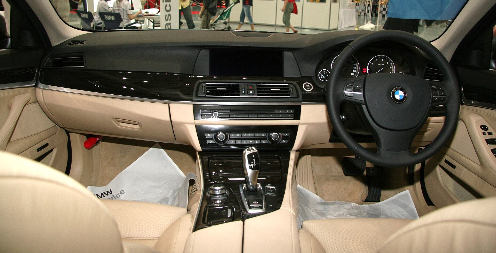
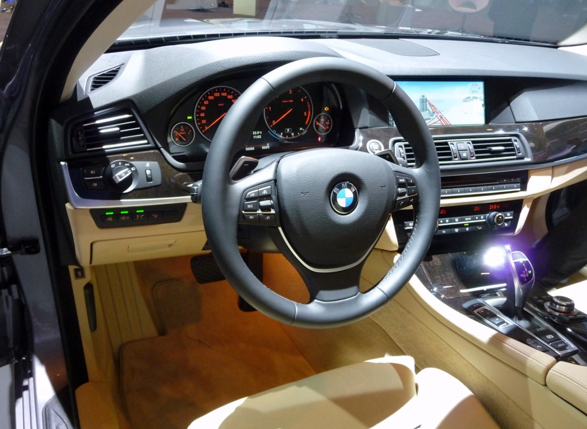
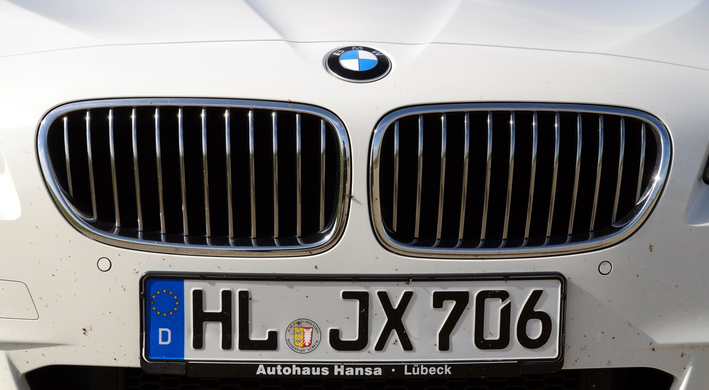

BMW 535i — панель и салон

Автор: TTTNIS. Статус: Public domain согласно исходной странице.
Оригинал и сведения об авторских правах ↗
Подключён в карточке iDrive. Исходный размер 3504 × 1791; локальный — 1920 × 981.
Пять отдельных снимков BMW F10 сохранены локально из Wikimedia Commons. Изменения файлов: уменьшение разрешения и JPEG-сжатие; без увеличения исходных изображений и без изменения содержания. В карточках фотографии могут отображаться с адаптивным кадрированием.
Фотографии показывают конкретные машины и не подтверждают оснащение всех версий. Условия лицензий относятся к изображениям; ими не обозначается лицензия всего сайта.

Автор: TTTNIS. Статус: Public domain согласно исходной странице.
Оригинал и сведения об авторских правах ↗
Подключён в карточке iDrive. Исходный размер 3504 × 1791; локальный — 1920 × 981.

Автор: Benny Hiltscher, BimmerToday.de. Лицензия: CC BY-SA 3.0.
Оригинал, источник и разрешение ↗
Общий вид салона из публикации о 550i F10, иллюстрация комфорта, не крупный план кресел и не доказательство комплектации 535i. Локальный JPEG 1600 × 1170. Изменённая версия изображения распространяется на условиях CC BY-SA 3.0.

Автор: Ethan Llamas. Лицензия: CC BY-SA 4.0.
Иллюстрация кузова в блоке парковки; не свидетельство наличия определённой камеры или пакета ассистентов. Исходный размер 3206 × 2405; локальный — 1920 × 1440. Изменённая версия изображения распространяется на условиях CC BY-SA 4.0.

Автор: Wladyslaw Sojka (Taxiarchos228). Лицензия: Free Art License 1.3.
Оригинал и условия использования ↗
Иллюстрирует кузов в блоке акустического комфорта. Исходный размер 4549 × 2508; локальный — 1920 × 1059. Уменьшенная версия распространяется по Free Art License 1.3.

Автор: M 93. Условия: Attribution — использование разрешено с указанием автора согласно странице оригинала. Это не лицензия Creative Commons.
Оригинал и разрешение автора ↗
Снимок 2010 года иллюстрирует модель F10. Он не подтверждает рестайлинг или комплектации таблицы июля 2013. Исходный размер 2513 × 1497; локальный — 1920 × 1144.